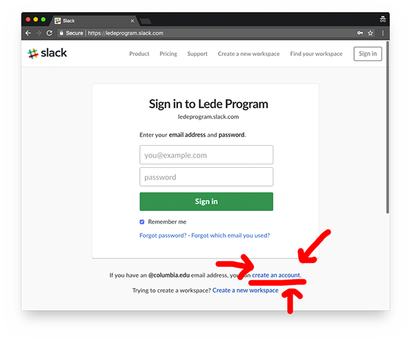

Installing Software
There’s lots of software to install, but this part is more busywork than hard work.
Slack, your chat software
Slack is a messaging app that helps teams manage communications. It’s an incredibly popular tool - even The New York Times uses it for their workflow (among other cool things).
Even if you’re using your Columbia email, it is not the same account as your Columbia account (you can’t just log in with the same password as your email). You can use your Columbia email address, but it’s a new account. Also, if you have an existing Slack account with another organization, you have to make a new one! Every time you join a new group you need to make a new account.
Our Slack is located at https://ledeprogram.slack.com. Create an account using your Columbia email address.

We’re going to be using Slack a lot.
- You can use it to get help from teaching assistants during class. You can get a TA’s attention by typing
@theirnamein a message, or you can send them a direct message. - It’s also useful to get help when you’re at home. Can’t find a file? Find a typo in some instructor code? Check in on Slack!
- Be sure to download the mobile app to get immediate notifications from instructors during the summer.
- It can also be a little fun - use Slack to share interesting links, find folks who are interested in going to events with you, and just generally hang out.
When you sign in to Slack, you’ll automatically be signed in to several channels (a.k.a. chatrooms)
#generalis for announcements by instructors#foundations,#data-and-databases,#algorithmsand the#data-studiochannels are all course-specific channels#socialis for general chit-chat. Want to chat about the weather? Looking to put together a potluck? Try here!#eventscan be used to keep a list of events that Lede might be interested in - meetups and more.#jobsis for job postings you notice that folks might be interested in#codingis for coding questions not related to classwork/homework. A lot of previous Lede students hang out in there.
You might want to check out Getting started for new users to learn the ins and outs of Slack.
PostgreSQL, your database server
PostgreSQL (or Postgres) is a kind of database. You’ll like it.
Installing on OS X
There are a few ways to install PostgreSQL on OS X, but we’re going to go with Postgres.app. If you have a version of OS X older than 10.10, you’ll need to download a legacy version (probably PostgreSQL 9.3.23).
Whenever you want Postgres to be running, run the app.
To run the psql client which lets you ask the database for information, open the app and double-click the database you’re interested in.
Installing on Windows
There are a few different tools you can use to install PostgreSQL on Windows, we’re going to use BigSQL. BigSQL isn’t separate software, it’s just some people who make an installer for Postgres.
Visit the downloads page and download and run the Windows installer.
During installation, you will be able to choose several options:
- It doesn’t matter if you install pgAdmin or not. We aren’t going to use it, but it isn’t going to hurt anything.
- Unless you have a good memory, set the password to
postgresso we don’t have to reset it later
When you want to access the database, you could just run
psqlfrom the start menu. You’re going to get a weird error, though! In order to make that error go away, you need to open thecmdfrom the start menu, runchcp 1252, then runpsql -U postgres. We’ll talk about why at some point.
A plain-text editor
One of the most important tools we’ll use is a “plain-text editor,” which means you write and edit text without fancy stuff like bolding or italics. Writing in plain text is a requirement for programming, and from crunching numbers with Python to hand-crafting web pages. You sure can’t do that in Microsoft Word!
Any of the plain-text editors below will work. Everyone in the world loves Visual Studio Code and Atom, but I personally use Sublime Text because it’s better at large files (costs money, though). It’s no big deal which you pick!
- Visual Studio Code
- Atom
- Sublime Text
- Notepad++ (Windows only)
IDEs
There are also more complicated pieces of software that can be used for writing code called IDEs, integrated development environments. They do a ton of extra stuff, but can be a little overwhelming and are usually more useful on large software projects with dozens or hundreds of files. We won’t ever go above a few files, so something like Atom works great for us. PyCharm is one for Python that some people like, but we won’t be using in class.